JEAN-JACQUES DEPOIS DE 62
JEAN-JACQUES DEPOIS DE 62 Faz hoje precisamente 248 anos que morreu Rousseau. A revolução francesa viria a dar-se em 89, 11 anos depois de quem a teorizou ter morrido no maior dos isolamentos. Quest-ce-que la…
Arquivo Digital de Investigação em Numismática Medieval Portuguesa
Categoria
65 publicações
JEAN-JACQUES DEPOIS DE 62 Faz hoje precisamente 248 anos que morreu Rousseau. A revolução francesa viria a dar-se em 89, 11 anos depois de quem a teorizou ter morrido no maior dos isolamentos. Quest-ce-que la…
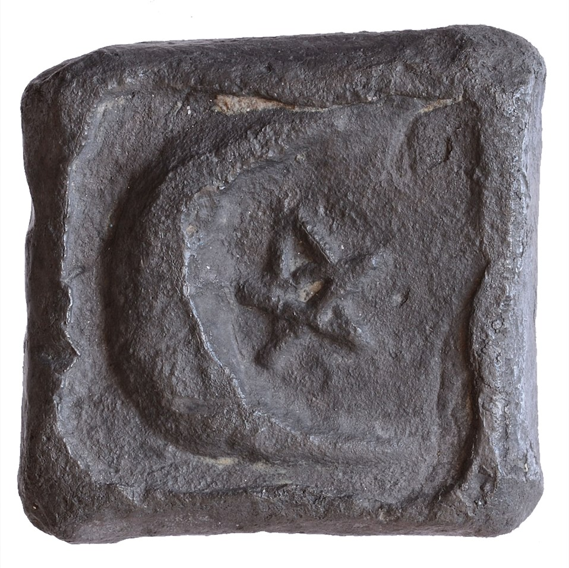
O SOL E A LUA Um peso monetário grego, feito na Ática. Museu de São Raimundo, Toulouse.
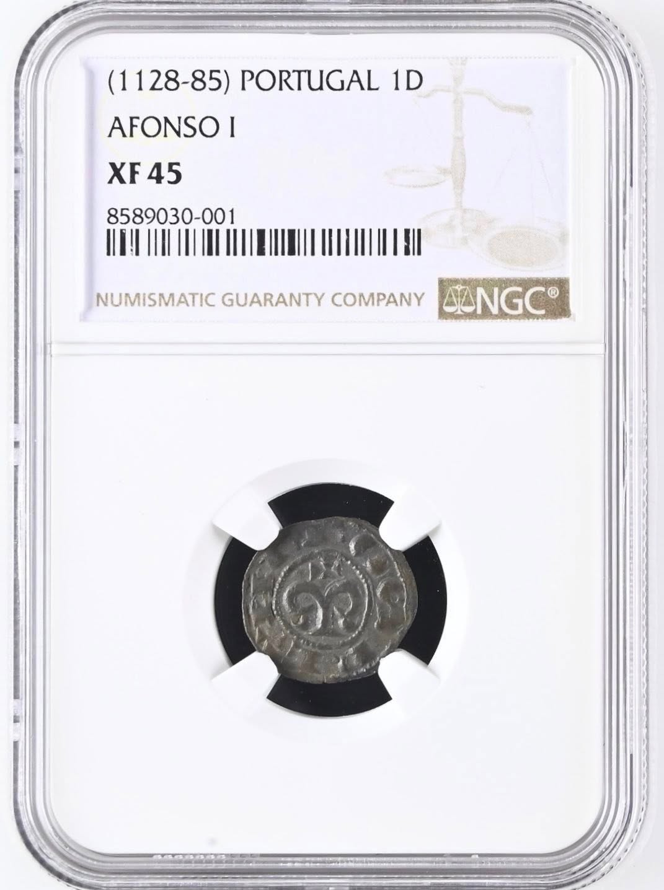
AS CERTIFICAÇÕES DA CUNHAGEM MANUAL PORTUGUESA A Numismática Diamantino é uma das poucas casas de numismática pela qual ainda tenho algum respeito. São especialistas em cunhagem mecânica, com catálogo editado todos os…
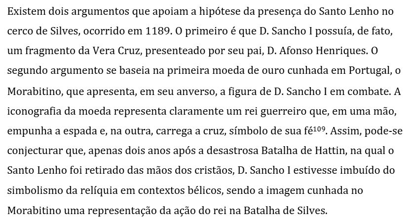
O CAVALEIRO E A CRUZ Na primeira imagem pode-se ver um excerto de "A Relíquia do Santo Lenho, um elo na intrincada relação entre a Ordem do Hospital e a Monarquia Portuguesa", tese de mestrado publicada em 2025, por…
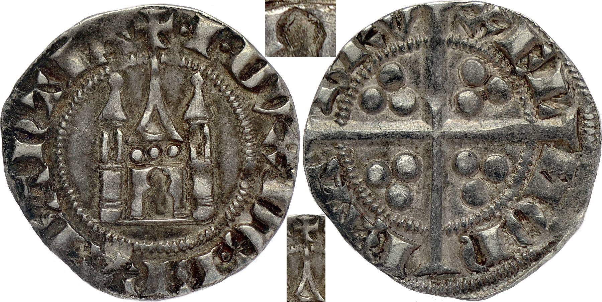
4X3 Neste esterlino de João III, duque do Brabante no início do século XIV, pode-se ver uma tipologia de reverso comum aos pennies ingleses, percebendo-se que a mesma deve ter sido escolhida em nexo com a circulação…
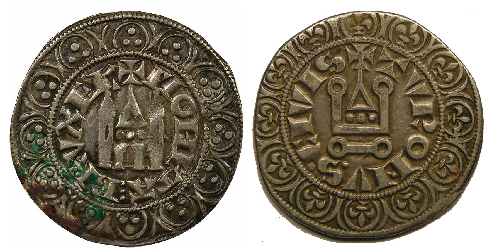
12x3 Eu peço desculpa por insistir nas alusões trinitárias, mas a verdade é que os conjuntos de três pontos são considerados pela nossa historiografia da arte como meramente ornamentais, daí estas postagens, que servem…

MOEDAS APOTROPAICAS Na época da fundação da nacionalidade, que considero como todo o período que vai desde a assumpção do condado portucalense por Teresa e Henrique, até ao início da consolidação do reino por D. Afonso…
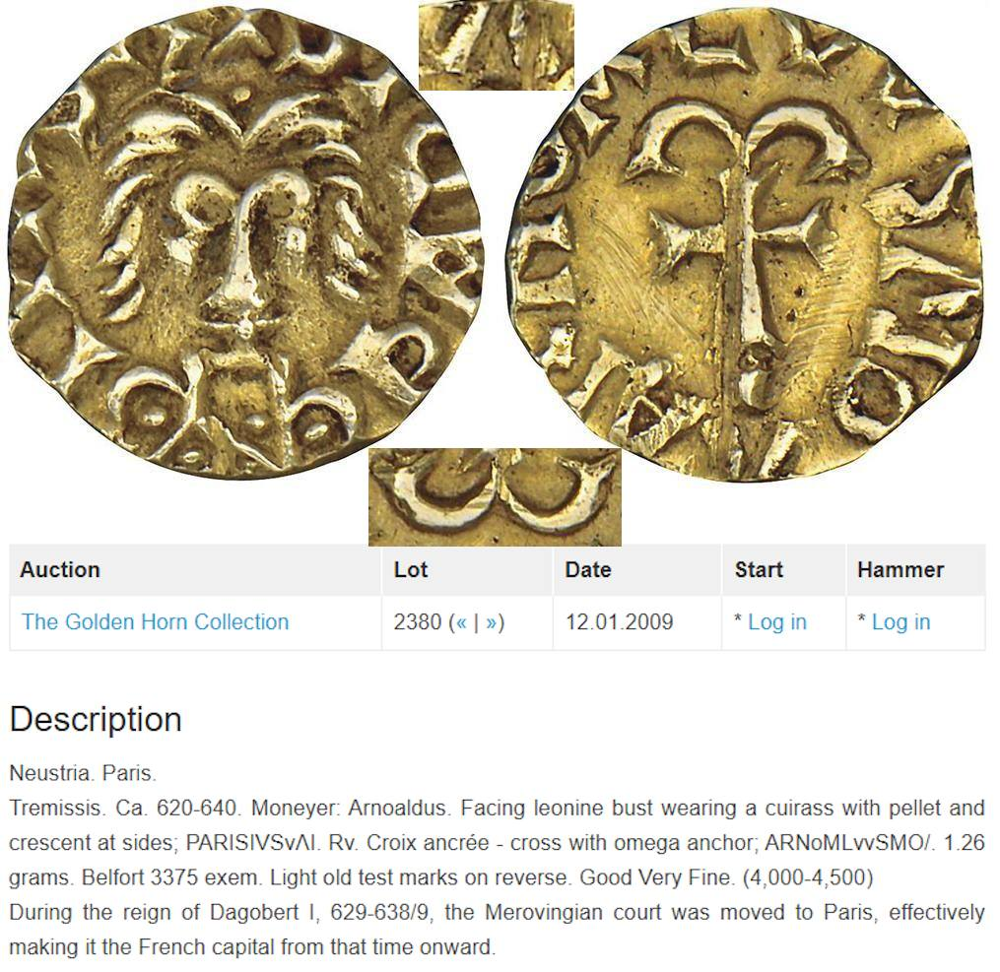
O LEÃO DE DAGOBERTO Estas duas moedas entram no mercado no século XXI. Logo, não sei se são autênticas, até porque não sou entendido nesta numária. Se o forem, são moedas de Dagoberto, o último rei merovíngio que, no…
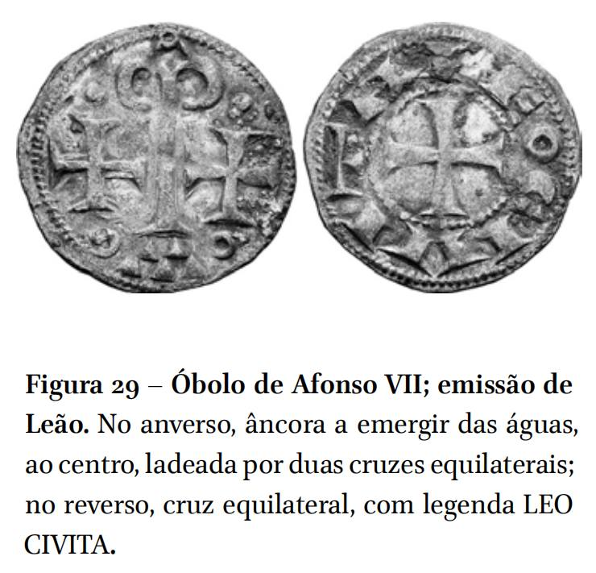
O BÁCULO, A ÂNCORA E A ÁRVORE Hoje voltei a olhar para este óbulo de Afonso VII, ilustrado por Mário Pastor no seu estudo sobre os dinheiros de D. Afonso Henriques. Vejo nele uma significação trinitária principal, com…
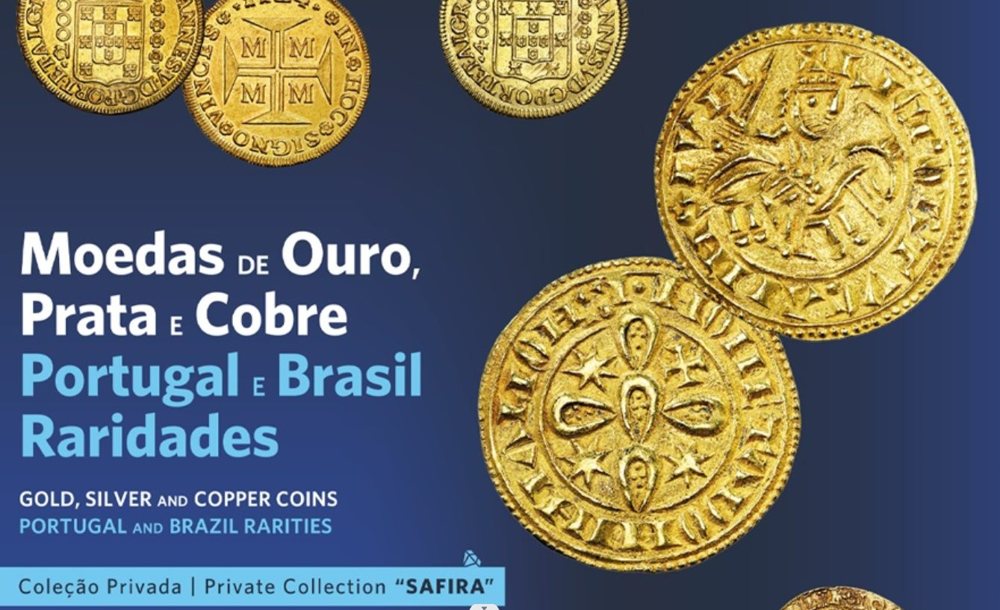
A ESTILIZAÇÃO DAS TALAS Acabei de receber um email, no qual destaco um novo morabitino de D. Afonso II, dos quais, já desde há muitos anos, se conheciam apenas 9 exemplares. Os morabitinos de D. Afonso II não são…
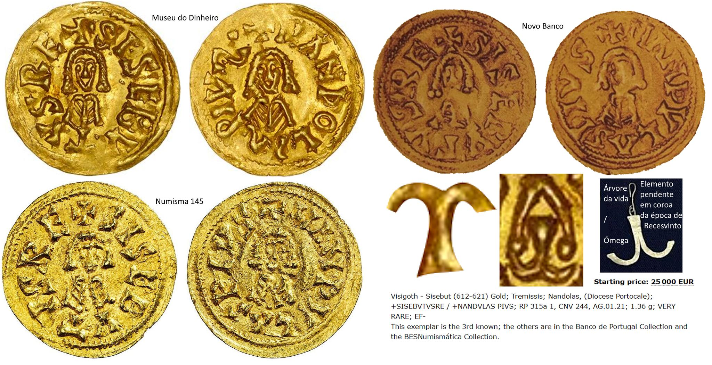
145 NANDOLAS A Numisma apresentou, no leilão 145, o terceiro exemplar conhecido de um tremisse de Sisebuto de "Nandolas", que era uma paróquia da diocese do Porto no tempo dos Suevos. Nesse exemplar, em contrariedade…
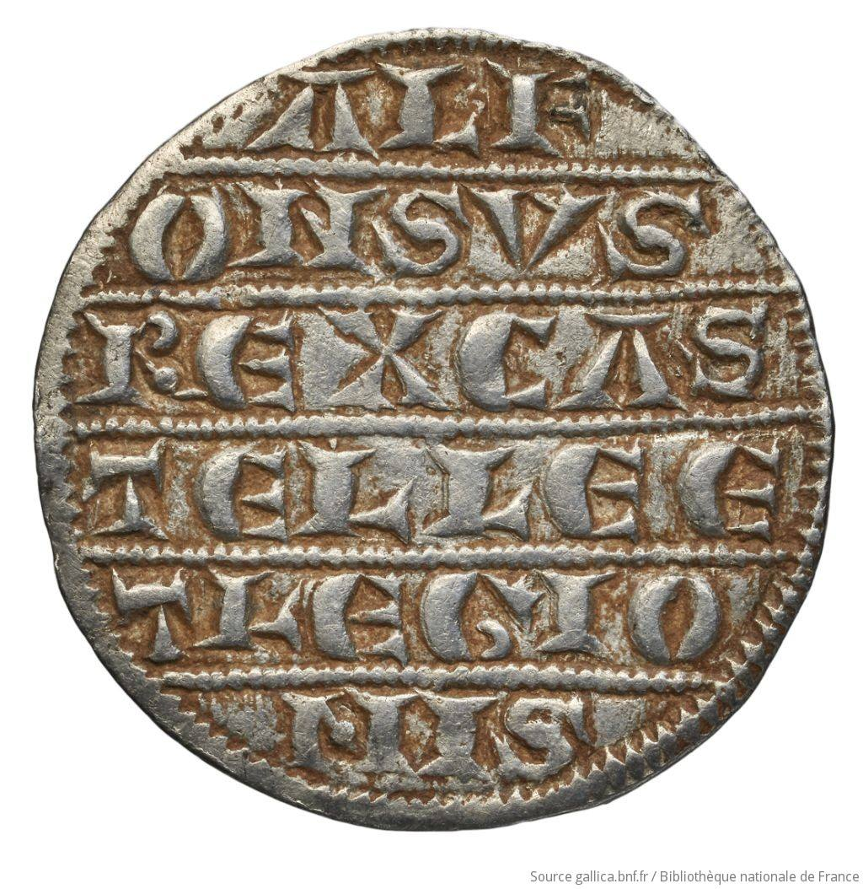
LINHAS Na colecção da Biblioteca Nacional de França existe este 1/4 de maravedi de Afonso X de Leão e Castela, lavrado no século XIII, e de tipologia muito semelhante à dos "dineros de lineas". Numa das faces, não…
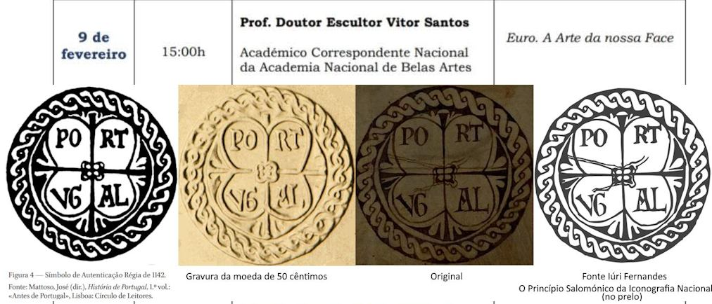
A CORRECÇÃO DA FACE PORTUGUESA DO EURO Acabei de chegar da conferência que teve lugar na Academia Nacional de Belas Artes, que foi pouco concorrida, mas muito esclarecedora, e onde obtive pessoalmente os esclarecimentos…
TAROUCA - O ESTUDO NUMISMÁTICO Já está disponível uma das teses sobre numismática que há muito tinham sido anunciadas pela Faculdade de Letras da Universidade do Porto. Sobre este trabalho, que acabei de ler, tenho…
OS ESTUDOS DA NUMÁRIA DE D. JOÃO I 395675823 Study of Portuguese Coins Issued During the Reign of D Joao with pXRF Technique and Multivariate AnalysisEstudo de Moedas Portuguesas Emitidas Durante Pouco depois de mostrar…
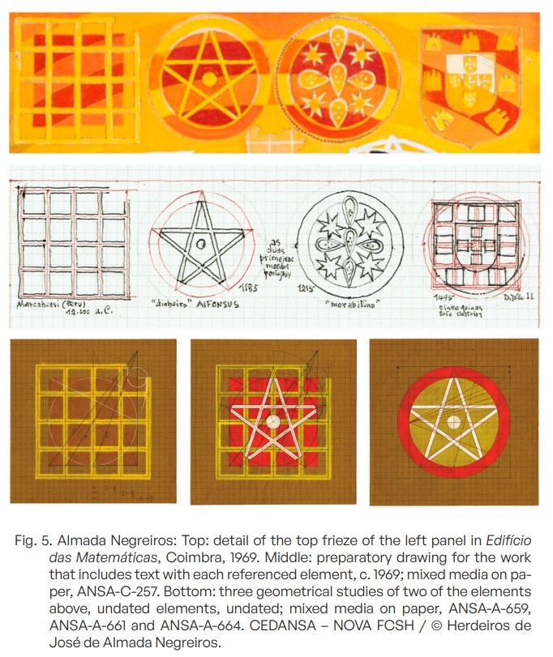
ALMADA NEGREIROS E O PENTALFA Do espólio do pintor: “Publicou na secção de numismática no ‘Diário de Lisboa’ uma figura geométrica a qual creio vir a propósito de morabitinos portugueses (...) Recortei do jornal esta…
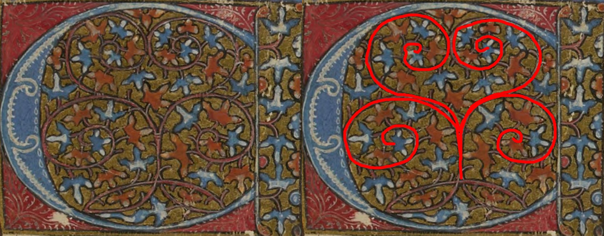
UM CLÁSSICO DAS ARTES DECORATIVAS Podemos olhar para esta inicial de dois modos. Um é o tradicional: "Inicial povoada de volutas e motivos vegetalistas - o rinceau". O outro é um pouco mais profundo: "Cristo é amor".…
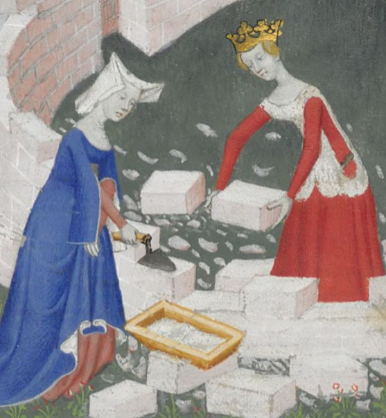
IGUALDADE Um exemplo pictórico do ideal feminista no dealbar do século XV. Français 607. BNF, fólio 2r, 1408
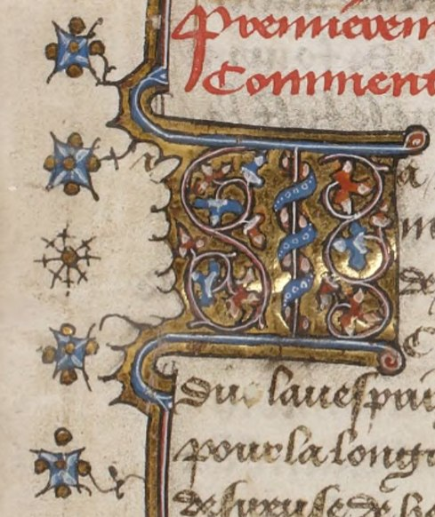
ASCLÉPIO ESTILIZADO Já me tinha cruzado com vários tipos de espirais decorativas, mas nunca com um bastão de Asclépio disfarçado de ornato. É por estas e por outras que cada vez mais me convenço que a temática da árvore…
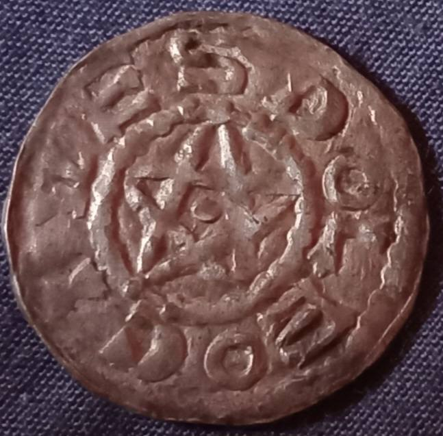
UM PENTALFA Depois da queda do império carolingio, no sec. IX, inicia-se a época feudal. É o tempo dos castelos e dos " senhores castelões" que, à revelia da árvore de Jessé, tomaram o poder um pouco por toda a França,…
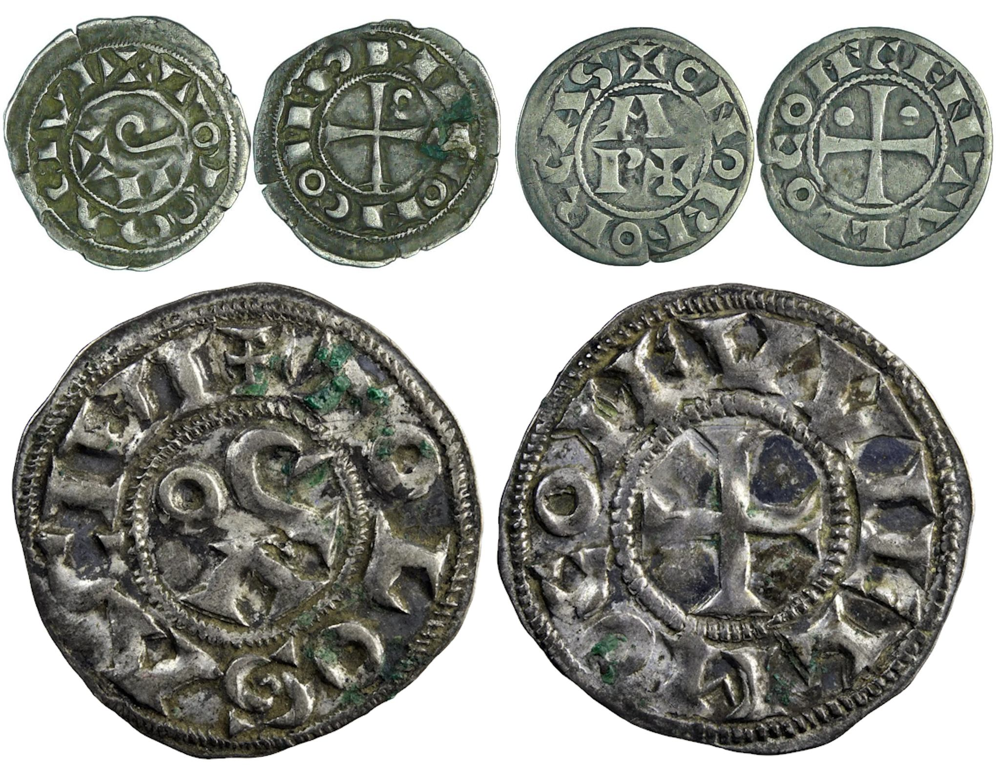
PAX? Continuo a insistir neste tema. Em cima, dinheiro de Raimundo e dinheiro de Afonso Jordão. Em baixo, dinheiro de Guilherme IV. Os autores franceses chamam a este tipo "PAX", por lerem nele um "P", um "A" e um "X".…
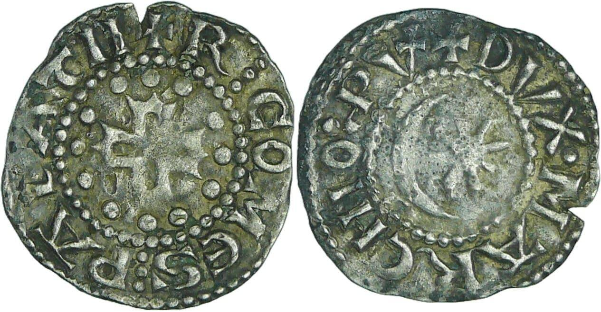
O MEU PRIMEIRO RAIMONDINO Há moedas que exigem uma forte dose de estudo para serem compradas em segurança e esta foi uma delas. Ao olhar para aqueles "R's", tão parecidos aos que se usaram nas emissões do final da…
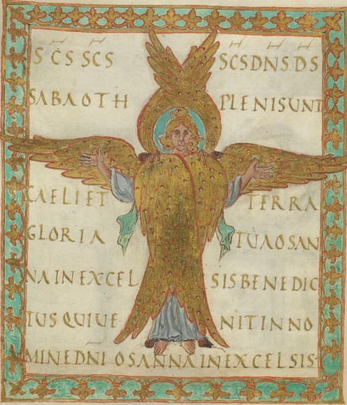
OS TRÊS DA VIDA AIRADA Como a arte é "para se ir compreendendo", a quem interessar, vou deixando reflexões sobre a Trindade, umas mais implícitas e outras mais explícitas. No Sacramentário de Drogo, obra prima do…
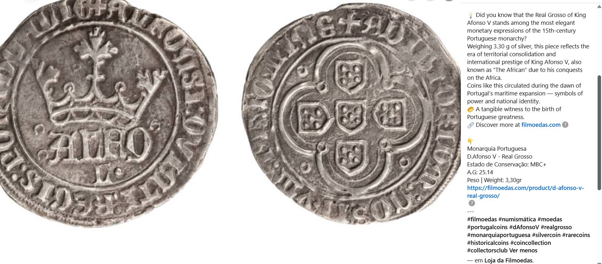
REMIGRAÇÃO MONETÁRIA Muito francamente, a colocar exemplares no mercado em que nenhuma letra é igual à outra, mais vale remigrar este material todo para fundição, até porque, da terra, sai todos os dias um manancial de…
AS MOEDAS DAS PRINCESAS Pela primeira vez na numismática medieval portuguesa, foi possível identificar, por comparação sistemática com emissões estrangeiras, a epigrafia de um novo abridor de cunhos, já presente em…
ALJUBARROTA Uma visão coeva da Batalha, publicada nas crónicas da Abadia de Saint-Denis. Crónica de Carlos VI, livro VII, capítulo V. "Tive o cuidado de ser informado das desgraças deste príncipe e soube por fonte…
AS MOEDAS DE D. SEBASTIÃO Há 6 ou 7 anos, no seguimento de um ataque colectivo perpetrado sobe a minha vida, o senhor doutor engenheiro Marco Gonçalo Ramos e o senhor professor Bernardo Leite da Cunha, aproximaram-se de…
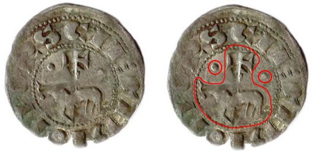
DECIFRAÇÕES ICONOLÓGICAS "PRO BONO" A gigantesca maioria dos autores, nacionais e estrangeiros, fala em ornamentação com um certo sentido frívolo, parecendo ignorar os motivos iconológicos da mesma. Alguns autores…
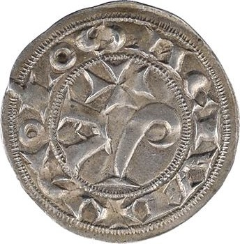
ICONOGRAFIA MEDIEVAL DECIFRADA Ando sem pachorra para escrever artigos e sobretudo para me meter nas numárias de outros países. Um pouco por todo o mundo há um fenómeno que me parece constante: Ninguém percebeu a…
O ENG. FRANCISCO MAGRO + Conheci o eng. Magro e troquei impressões com ele várias vezes. Falámos de muitas coisas. Leais, ceitis, reais de D. João I, típicos e atípicos. Recordo-me de o interpelar numa conferência sobre…
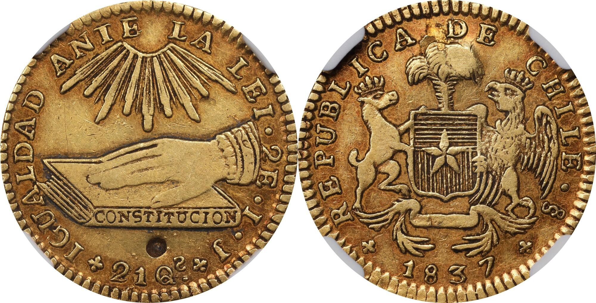
Estava a ver o catálogo da Stack's e fiquei hipnotizado, durante uns bons 15 minutos, com esta moeda. São dois escudos do Chile, de 1837, que me chamaram sobretudo a atenção pela iconografia. Numa das faces pode ler-se…
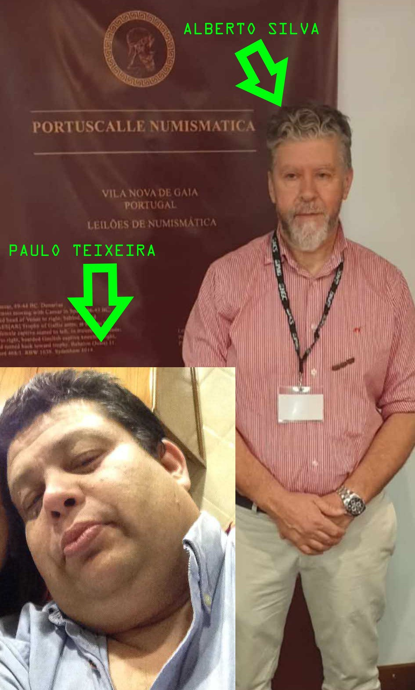
A PORTUSCALLE NUMISMÁTICA NA CRISTA DA PÓS-MODERNIDADE Eu sei que o tema pode fazer confusão a um certo sector da tradição de qualidade, mas não consigo deixar de me pronunciar sobre ele com moderado interesse. Ao…
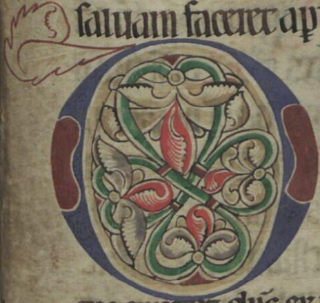
CRISTO É AMOR A frase podia ser retirada de um daqueles programas da tradição de qualidade, tipo 70x7, ou estar aposta no placar luminoso de um centro paroquial ou de uma loja de parafernália católica. Podia até ser…
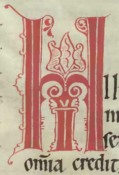
A ÁRVORE DA VIDA Ao longo dos próximos tempos a Resistência Numismática vai-se dedicar à partilha de imagens retiradas de capitulares de manuscritos do século XII, procurando realçar as referências ao divino, para que…

O BÁCULO DE SÃO ROSENDO São Rosendo, personagem do século X galego, nasceu em Santo Tirso, no ano de 907 e, sendo descendente dos monarcas leoneses, ascendeu ao cargo de bispo, sendo canonizado pela primeira vez em…
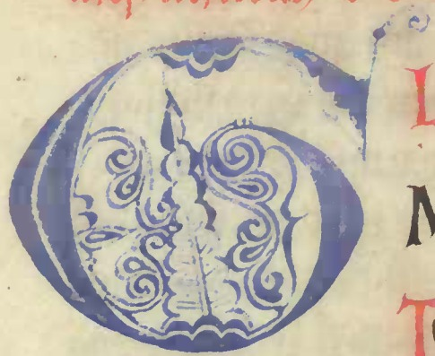
A Resistência Numismática deseja boas festas a alguns dos seus leitores e oferece-lhes uma capitular de um manuscrito Alcobacense da época da fundação da nacionalidade. O ´seculo XII é, de um ponto de vista artístico,…
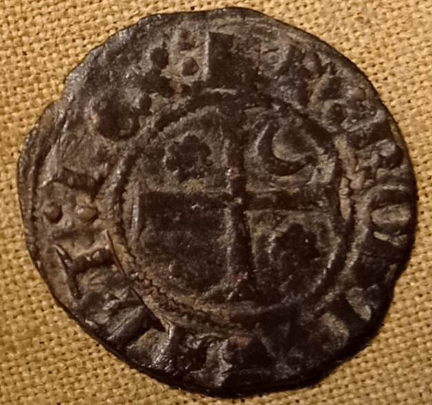
UMA QUESTÃO FERNANDINA Há uma série de tempo fui contactado por um agiota científico para lhe fornecer fotos de dinheiros de D. Fernando, da minha colecção, para estudo. Forneci-lhe as fotos, os pesos e os diâmetros,…
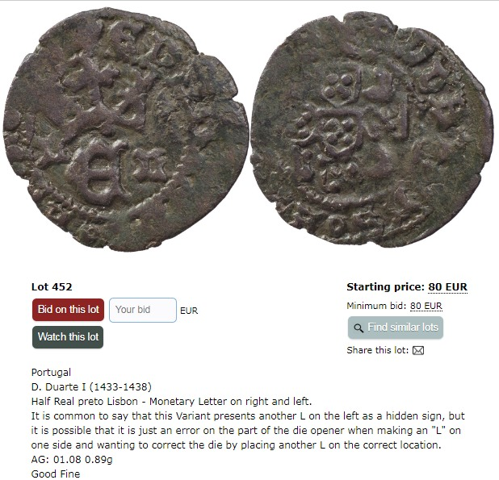
PUBLICIDADE GRATUITA Às vezes fico a olhar para os dizeres dos catálogos de leilões com um certo espírito de intriga. Os bons leiloeiros teriam por apanágio a virtude de esconderem pérolas do conhecimento por entre as…
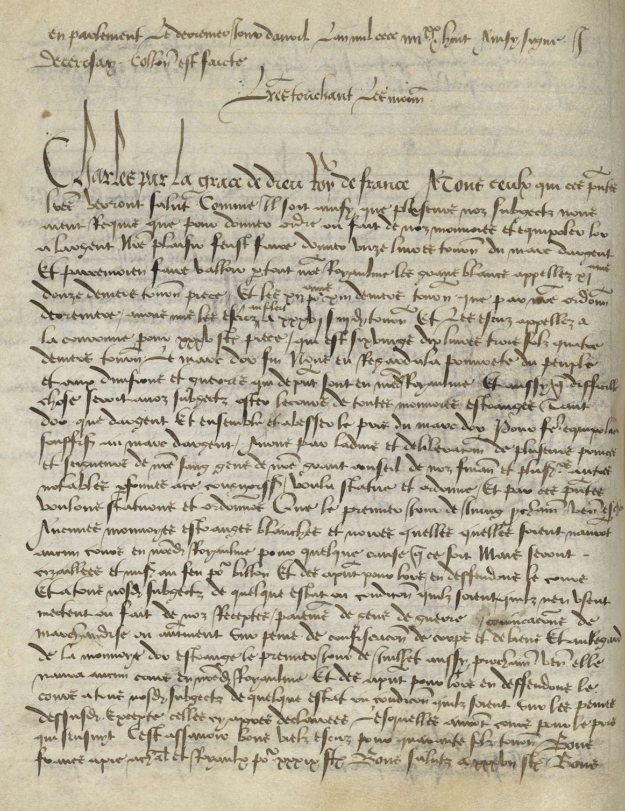
Em 1497 os reis católicos aboliam o bolhão na Pragmática de Medina del Campo. Antes disso, em 1488, Carlos VIII de França interditava o curso de bolhão estrangeiro em França. E, antes disso ainda, no ano de 1485, D.…
Se todos os países Europeus aderissem ao exemplo dos países nórdicos e se criassem bases de dados dos achados feitos com detectores de metais, ficávamos com um índice quase imediato do fluxo de comércio com cada um dos…
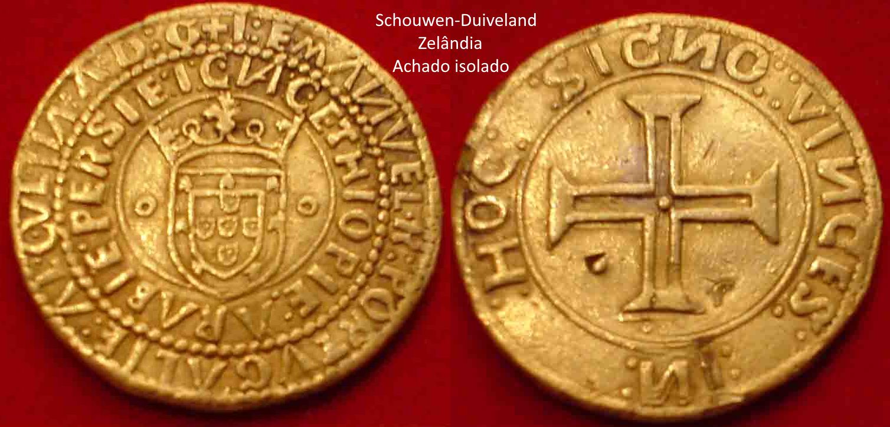
O Português de D. Manuel era a moeda de ouro mais pesada do mundo. Valia dez ducados e era aceite e reconhecida em todo o lado, como nos testemunha este achado, feito na Holanda, no ano 2000.
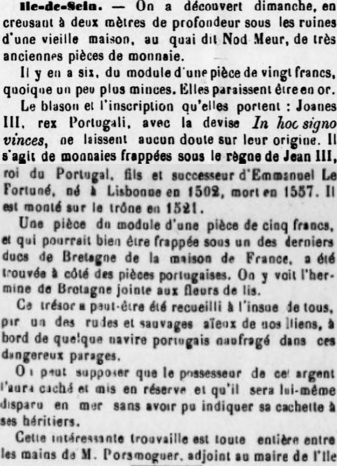
Em 28 de Otubro de 1898 era publicada, no jornal francês "Le Publicateur du Finistère", a notícia de um achado de 6 cruzados de ouro de D. João III, a dois metros de profundidade, nas ruínas dos alicerces de uma casa…
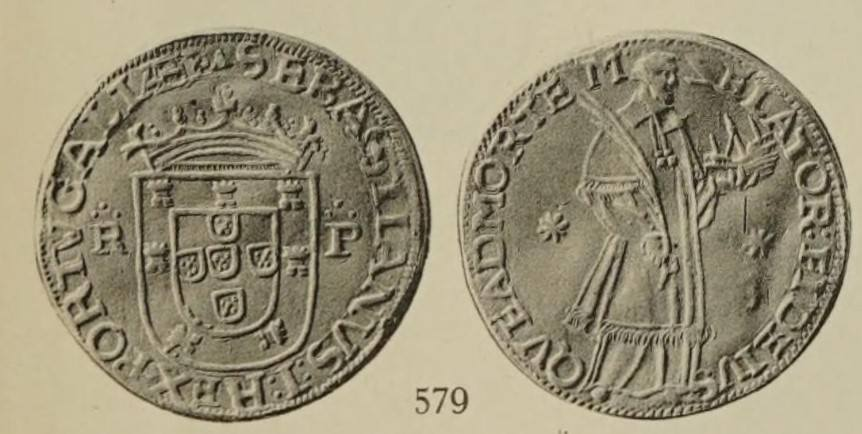
Na colecção de Charles Sabine Augustus Thelluson, formada entre 1859 e 1885, e vendida em 1931, existiam 5 moedas portuguesas. Um morabitino de D. Sancho I; três peças, de 1833, 1834 e 1835; e um raro São Vicente RP, de…
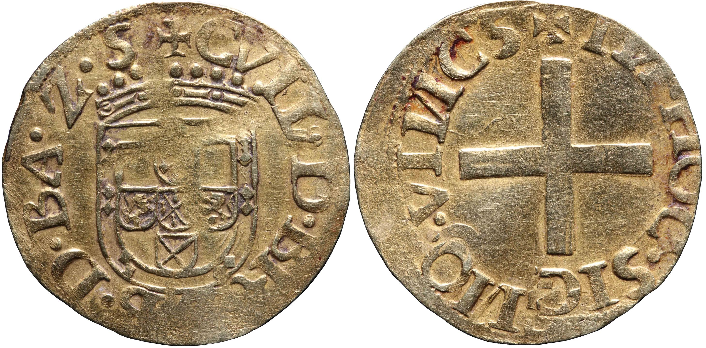
No século XVI a moeda portuguesa corria pelo mundo e era comummente aceite como meio de pagamento. Por isso mesmo, dela se lavraram inúmeras imitações, como é o caso deste cruzado, emitido por Guilherme V de Batemburgo.…
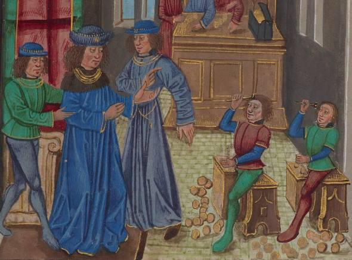
Uma casa da moeda no século XV Biblioteca Nacional de França ark:/12148/btv1b525133359
Resistência Numismáticafacebook.com A roda da fortuna é uma representação muito vulgarizada ao longo da idade média, sendo que o conceito existe já no tempo dos romanos. A Fortuna representaria talvez uma combinação da…
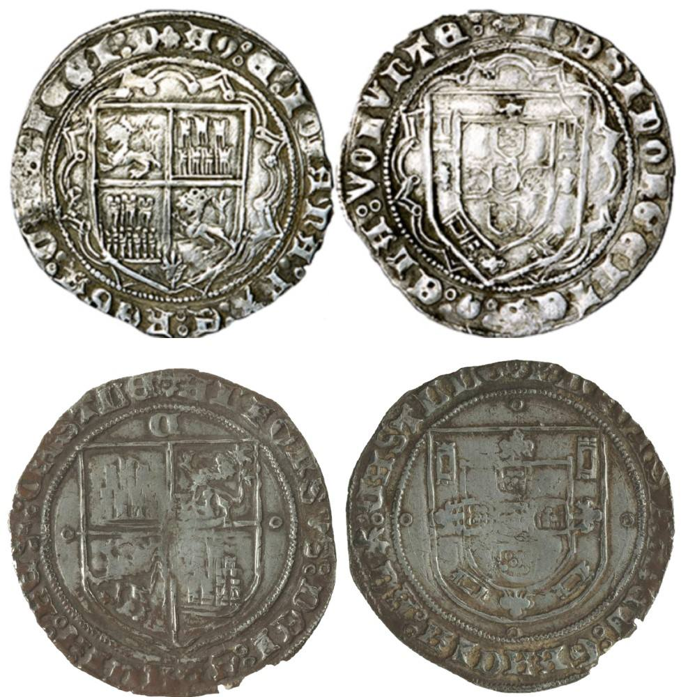
Estou há dois dias a pesquisar moedas de Henrique IV, de Afonso de Ávila e dos reis católicos. Já tinha perdido umas horas no passado a fazer o mesmo exercício, por mais que uma vez. Tudo para dizer o seguinte: Escrevi…
Ver no YouTube Ver no YouTube A obra "numismatique antique et médiévale en occident" de Georges Depeyrot, é um dos trabalhos fundamentais para perceber o período monetário que vai desde o final do império romano até à…
O estudo da numária medieval primeira (dinheiros velhos e novos) presta-se a tiques completamente distintos do estudo da numária medieval segunda (a que vai de D. Fernando a D. João II) e da numária moderna (a que…
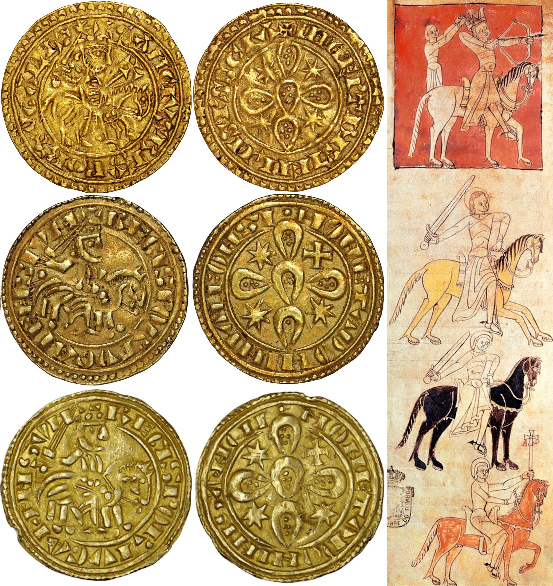
Aqui há uns anos, quem quer que se atrevesse a dizer que os dinheiros de cruz cravada eram de D. Sancho II, certamente seria contrariado por argumentos de erudição obscurantista, tomados como inabaláveis, e ancorados…
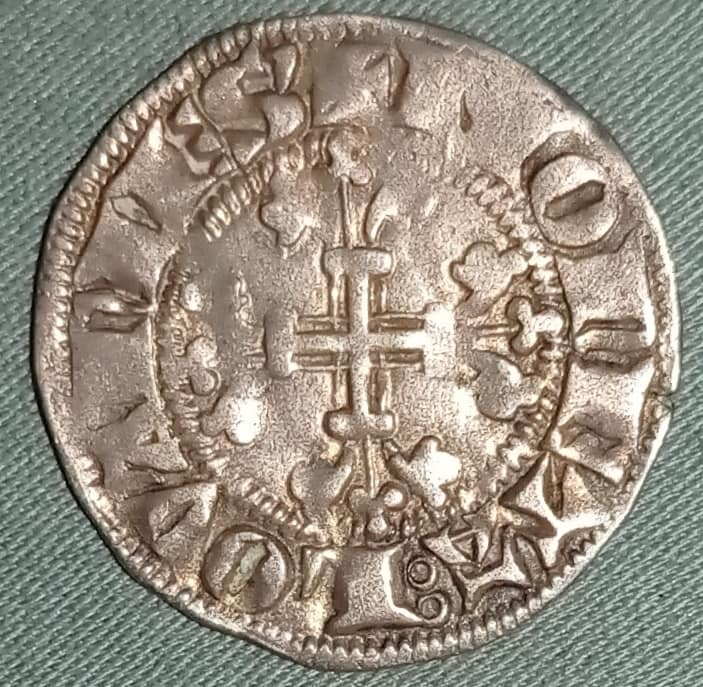
O coleccionismo de moedas, no que tem de bom, pode-nos levar a percorrer estilos, culturas e histórias. De qualquer campo se pode partir para o todo, e as moedas, reflectindo esse todo, naturalmente trazem uma outra…
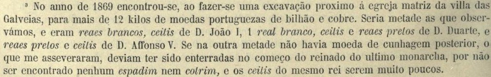
Teixeira de Aragão também escrevia notas de rodapé.
Mais notícias acerca do português de D. Manuel encontrado há cerca de um mês em Inglaterra: county durham metal detectorist unearths rare gold coin valued at up to 30000
Cheguei há pouco a casa e, no correio, para lá de um real branco, tinha a revista moeda. Gostei muito de ler o artigo do Eng. Trigueiros sobre as moedas "proof-like" no reinado de D. Luís. Desmistifica uma série de…
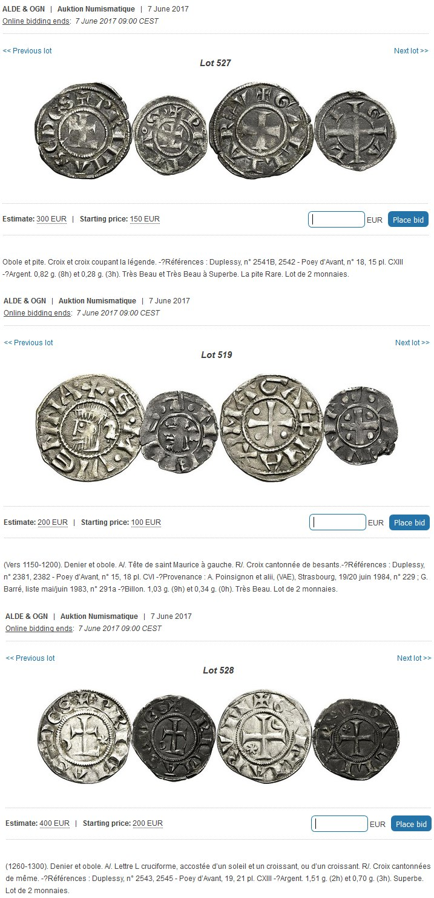
Ainda sobre dnheiros e mealhas (óbulos), uma imagem perdida no computador. Em cima, a comparação entre um óbulo e uma pite. E em baixo, dinheiros em comparação com óbulos. O assunto está longe de ser consensual ou de…
Um contributo para o Santo Ofício Tenho lido coisas extraordinárias, vindas dos nossos intelectuais da tradição de qualidade dos numismatas. A última foi esta: "Entre os moedeiros sempre existiram regras que, apesar de…
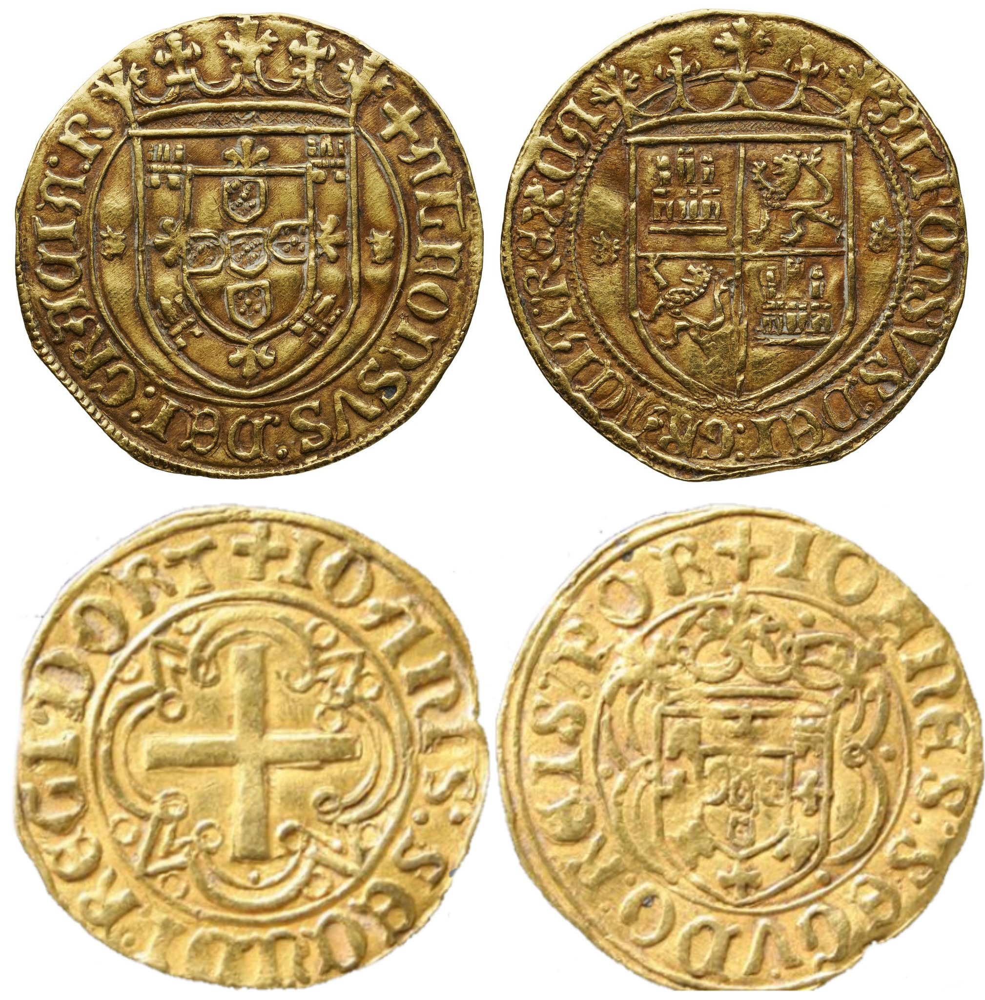
Na Batalha de Toro, travada em 1476, D. Afonso V vê a sua hoste derrotada, enquanto D. João II contra-ataca e ganha o dia. De nada valeu o esforço, nem a ocupação do campo de batalha, do qual os castelhano-aragoneses…
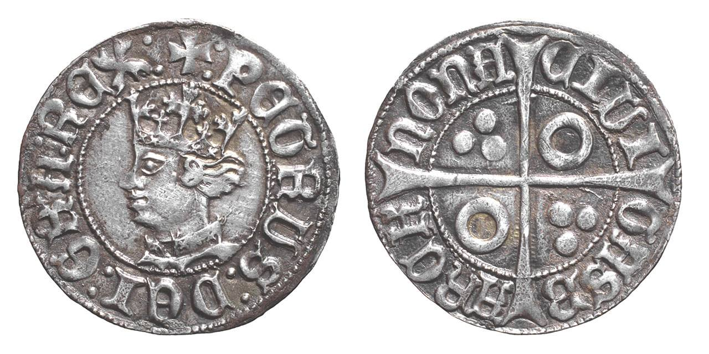
Uma moeda do Museu Nacional de Arte da Catalunha, de D. Pedro, filho do infante D. Pedro, que após 1455, e na sequência da reabilitação do seu pai, volta a Portugal para participar na cruzada. Depois, nos anos 60 do…
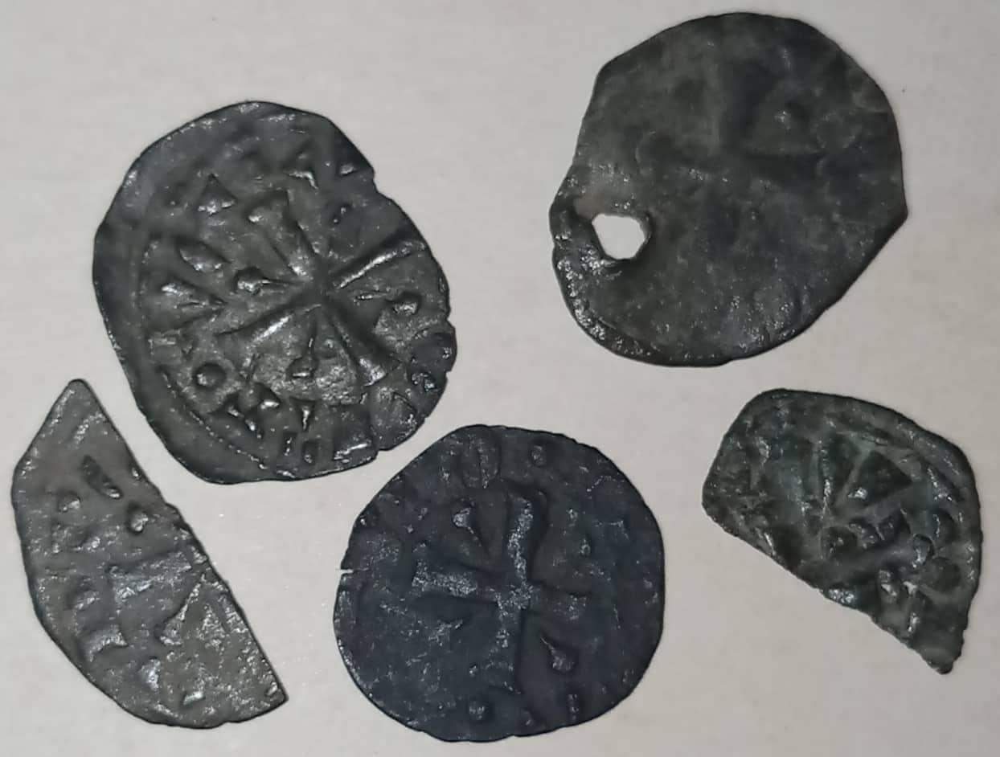
Sobre os dinheiros de cruz cravada, continuam a recair as maiores intrigas, algumas que até já foram esclarecidas no meu trabalho sobre morabitinos e dinheiros velhos e que um certo clube de futebol, à moda de quem…
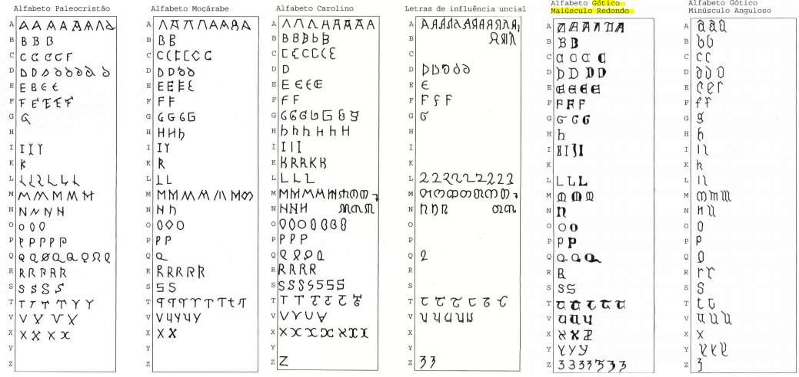
Tinha aqui esta imagem guardada, com a junção das tabelas da epigrafia medieval portuguesa do senhor professor Mário Barroca. Pode ser útil na compreensão dos alfabetos. Quanto à nomenclatura, isto é uma grande…
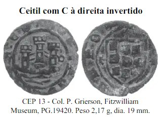
Sobre as pretensas moedas de Ceuta, já muito se escreveu e pouco de facto se concluiu com clareza. Deixo algumas palavras do Engº Trigueiros, escritas em 2015, bem como a foto de um "ceitil com c à direita invertido",…
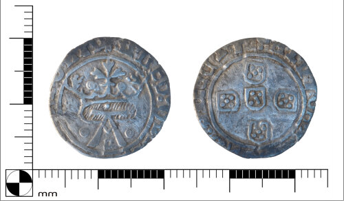
Mais dois chinfrões encontrados em Inglaterra (em locais diferentes) durante o mês de Agosto de 2022.
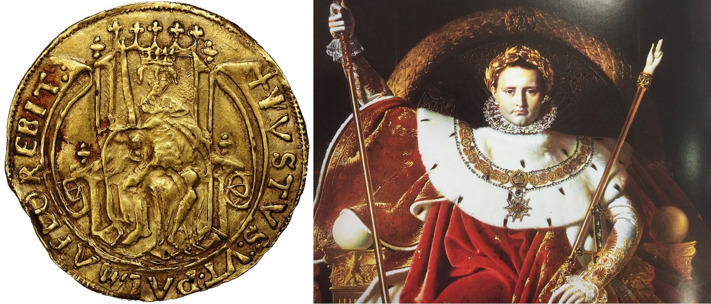
Uma nota de rodapé ilustrada "Muito embora o justo se insira num tipo iconográfico não original, é interessante observar que D. João II também usa a mão direita para segurar a espada (da justiça), a mesma que é…
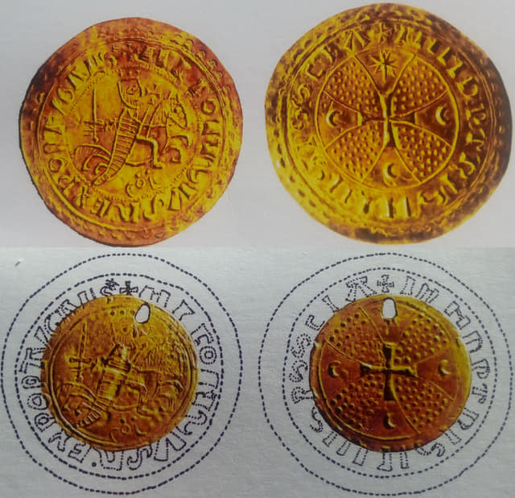
Um artigo bem recente da medievalista, que revela o enorme contributo que os senhores da ANP, na sua inestimável erudição e tradição de qualidade, têm trazido ao aperfeiçoamento da numismática e à compreensão da…
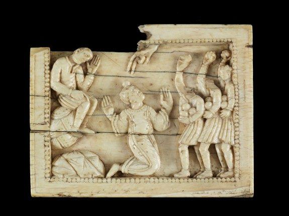
Uma nota de rodapé sobre o Santo Estevão, que aparece nos torneses de Metz: "O culto de Santo Estevão era bastante popular na idade média, também em Portugal, como o prova a ermida que, já no século XIV, existia na…